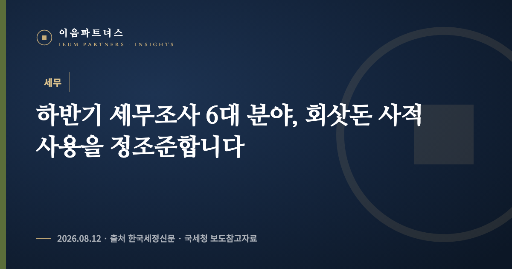

하반기 세무조사 6대 분야, 회삿돈 사적 사용을 정조준합니다

국세청이 2026년 8월 12일 전국 세무관서장 회의에서 하반기 세무조사 방향을 발표했습니다. 조사를 집중할 6개 분야 가운데 법인 대표님과 가장 가까운 것은 '법인자금 사적 유용'입니다. 이 글에서는 하반기 조사 분야와 법인자금 사적 유용에서 무엇을 보는지, 함께 발표된 세무조사 유예 대상을 정리합니다.
회사 돈과 개인 돈의 경계가 흐린 회사라면 이번 방향을 특히 눈여겨볼 필요가 있습니다. 반대로 요건에 맞는 중소기업은 조사 유예를 받을 수 있으니 함께 확인해 보시길 권합니다. 우리 회사가 어디에 해당하는지 궁금하시다면 카카오톡 채널 이음파트너스로 편하게 물어보셔도 됩니다.
하반기에 집중하는 6개 분야
국세청이 밝힌 하반기 집중 분야와 주요 대상은 다음과 같습니다(한국세정신문).
| 구분 | 내용 |
|---|---|
| 부동산 탈세 | 다주택 중과를 피하려는 저가 양도, 가장매매(실제로는 증여인데 매매로 꾸미는 것), 특수관계인 간 편법 증여 |
| 주식시장 불공정 탈세 | 주가조작, 중복상장, 주가 누르기 같은 편법 자본거래 |
| 법인자금 사적 유용 | 법인 명의 초고가주택·슈퍼카를 사주와 가족이 사적으로 쓰는 행위 |
| 민생침해 탈세 | 가격담합·매점매석, 특수관계법인에 유통비를 과다 지급하는 생필품 제조업체 등 |
| 역외탈세 | 해외 페이퍼컴퍼니(실체 없는 회사)를 통한 비자금 조성, 이전가격 조작 등 |
| 고액·상습 체납 | 신종 재산 은닉 추적, 지자체·관세청 합동 수색 |
법인자금 사적 유용, 무엇을 보나
국세청은 법인 명의 초고가주택과 슈퍼카를 비업무용 자산으로 보고, 이를 사적으로 쓰는 사주와 가족을 주요 대상으로 삼았습니다. 지방 법인이 서울 고가 아파트를 사서 사주에게 무상으로 빌려주거나 관련 비용을 회사 비용으로 처리하는 경우, 수억 원대 슈퍼카를 법인 명의로 사서 골프장·유흥업소에 다니는 경우가 대표적인 예로 꼽혔습니다.
상반기에 법인 고가주택을 전수 검증한 국세청은 하반기에 오피스텔·임차주택·비업무용 토지까지 검증을 넓힐 계획입니다. 9월 국세행정개혁위원회에서도 “법인 명의 초고가주택·슈퍼카 등을 사적으로 사용하는 탈세자는 철저히 부당이득 환수”라는 방향이 다시 확인됐습니다(국세청 보도참고자료).
세무조사 유예 대상은 넓어졌습니다
조사 강화와 함께 지원책도 발표됐습니다(한국세정신문). 매출 10억 원 미만 소상공인의 세무조사 유예는 2026년 말까지 연장됐고, 2026년 이후 중소기업인 대회 등에서 국무총리급 이상 표창을 받은 중소기업이 유예 대상에 추가됐습니다. 정기 세무조사 유예 대상 가운데 지방 소재 기업은 유예 기간이 최대 3년으로 늘었습니다.
고환율 등으로 어려움을 겪는 영세사업자와 중소기업은 8월 법인세 중간예납 납부기한이 2개월 직권 연장됐습니다. 국세청은 약 4만 개 법인이 혜택을 받는다고 밝혔습니다.
대표님이 지금 확인할 것
- 법인 명의 주택·오피스텔·차량을 누가 어떤 용도로 쓰는지 정리돼 있는지
- 임차한 주택을 대표나 가족이 쓰면서 임차료를 회사 비용으로 처리하고 있지 않은지
- 업무와 관계없는 토지를 회사 명의로 갖고 있는지
- 정부 표창, 지방 소재 등 세무조사 유예 요건에 해당하는지
참고한 자료
- 하반기 국세청이 세무조사 집중하는 6대 분야 — 한국세정신문 (2026.08.12)
- '연말까지 국세청 세무조사 유예' 추가되는 기업은? — 한국세정신문 (2026.08.12)
- 국민의 목소리를 담아 새롭게 도약하는 국세행정 — 국세청 보도참고자료 (2026.09.28)
우리 회사가 조사 유예 대상인지, 정리할 자산이 있는지 궁금하시다면 카카오톡 채널 이음파트너스에서 함께 살펴보실 수 있습니다.
※ 이 글은 일반적인 정보 제공을 위한 것으로, 개별 사안은 세무사·노무사 등 전문가와 함께 확인하시기 바랍니다.